Deploy da stack de Monitoramento no Kubernetes.
Acesse o diretório monitoring a partir do diretório do Helm.
cd robot-shop/K8s/monitoring
Crie o namespace monitoring.
kubectl create namespace monitoring
Crie o role prometheus para gerenciar o namespace monitoring.
kubectl create -f k8s-prometheus/clusterRole.yaml
Configuração do prometheus no cluster Kubernetes.
kubectl create -f k8s-prometheus/config-map.yaml
Crie o deployment do prometheus.
kubectl create -f k8s-prometheus/prometheus-deployment.yaml --namespace=monitoring
Crie o service do prometheus.
kubectl create -f k8s-prometheus/prometheus-service.yaml --namespace=monitoring
Aplique algumas métricas nos recursos do Kubernetes.
kubectl apply -f kube-state-metrics/
Crie os recursos do Grafana
kubectl create -f k8s-grafana/
Deploy da stack de Log no Kubernetes.
Adicione o repositório do Grafana ao Helm.
helm repo add grafana https://grafana.github.io/helm-charts
Instale o loki no namespace monitoring.
helm install loki grafana/loki-stack --namespace monitoring --create-namespace --set grafana.enabled=true
Clique no ícone do Rancher Desktop na bandeja do sistema e selecione "Dashboard".
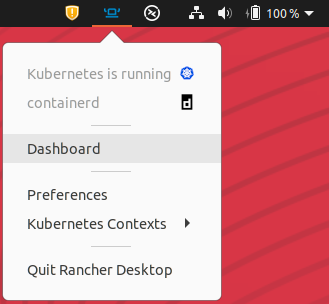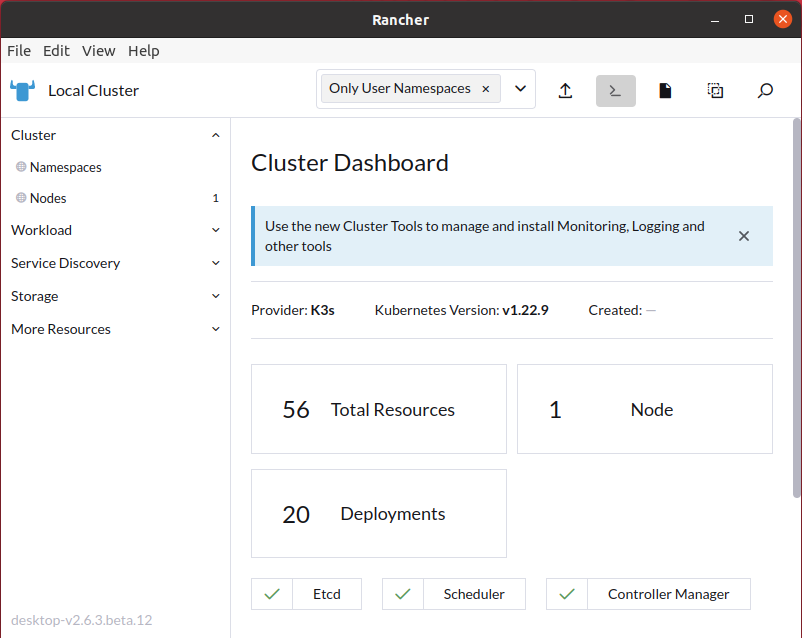
Selecione, no menu lateral esquerdo, "Workload" e "Pods" para visualizar os Pods em execução.
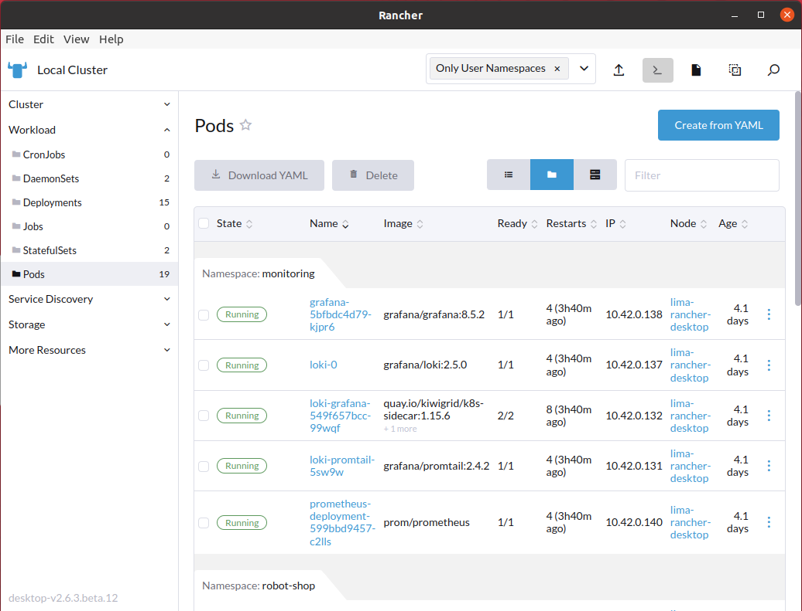
Caso algum dos Pods não tenha sido inicializado corretamente, vá na linha do Pod com problema e no canto direito da janela clique nos três pontos verticais e selecione "Delete".
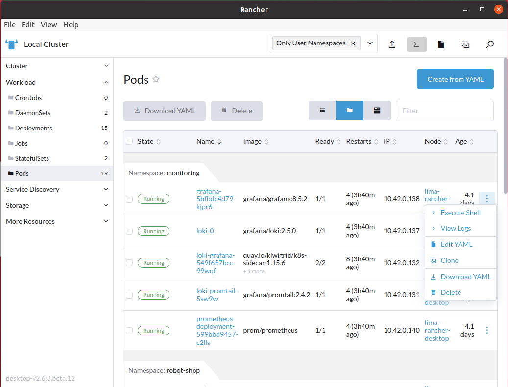
Confirme a deleção. Logo após o Service Discovery irá iniciar outro Pod baseado na mesma imagem. Caso o problema persistir, execute o comando kubectl logs -f {{POD_ID}} -n robot-shop e altere {{POD_ID}} pelo nome do Pod, encontrado na coluna "Name" no "Dashboard" do Rancher. O log deve auxiliar na correção do problema.
Configuração do Grafana.
Clique no ícone do Rancher Desktop que se encontra na bandeja do sistema e selecione "Preferences".
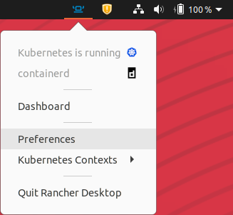
Selecione "Port Forwarding" no menu lateral esquerdo.
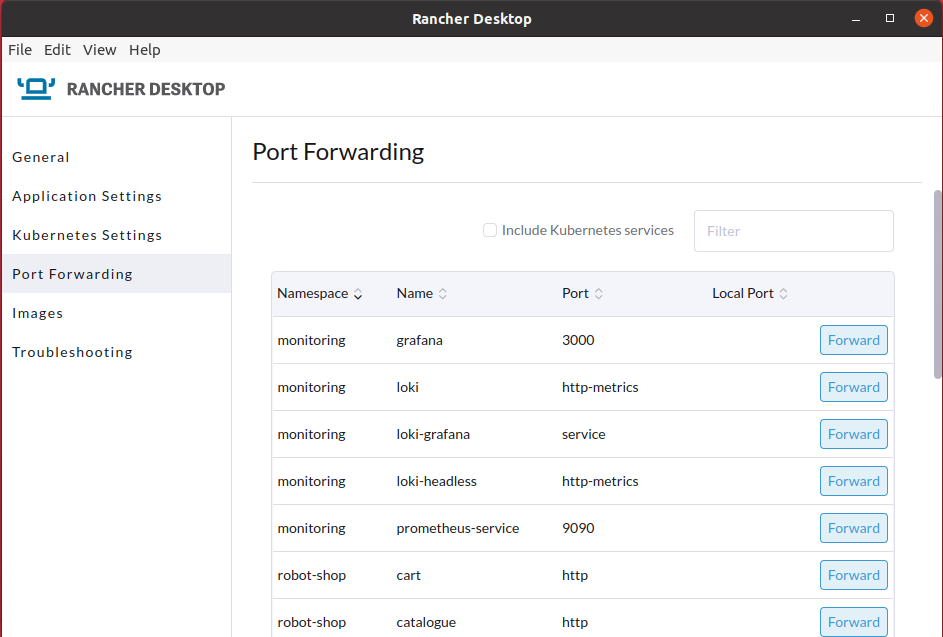
Clique em "Forward" nos serviços "grafana", "prometheus-service" e "web". Será gerada uma porta, na coluna "Local Port", para que você acesse os serviços localmente em seu navegador.
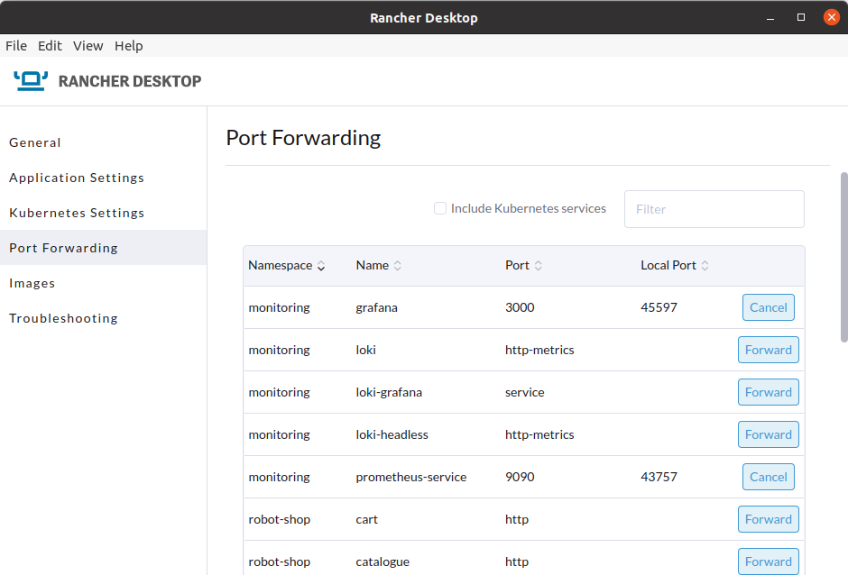
Acesse o Grafana em seu navegador, na porta que você acabou de gerar, com o endereço localhost:{{Local Port}}.
Faça login com o usuário admin e senha admin. Logo após, defina uma nova senha. Obs.: Será necessário redefinir a senha toda vez que você deletar o pod do Grafana.
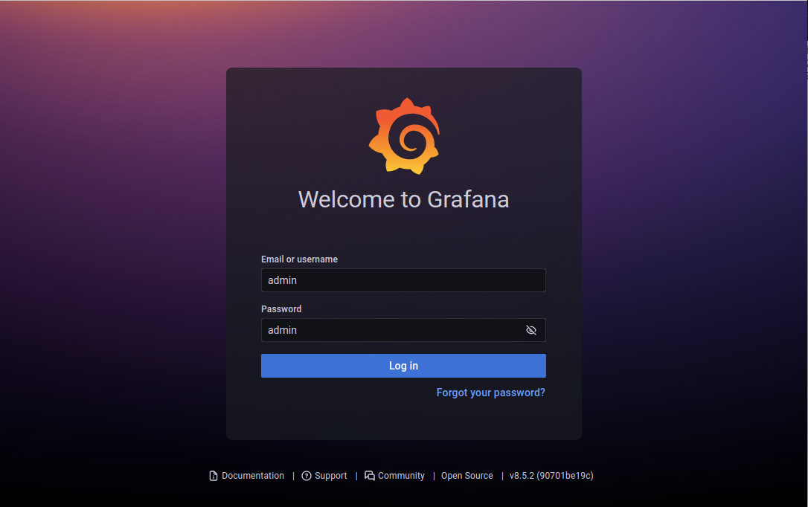
No menu lateral esquerdo, vá no ícone da engrenagem e selecione "Data sources".
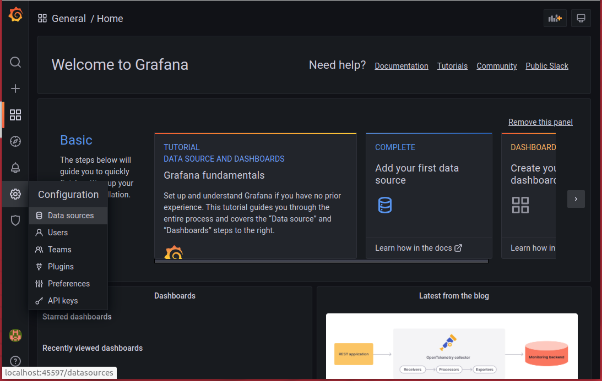
Selecione "Add data source".
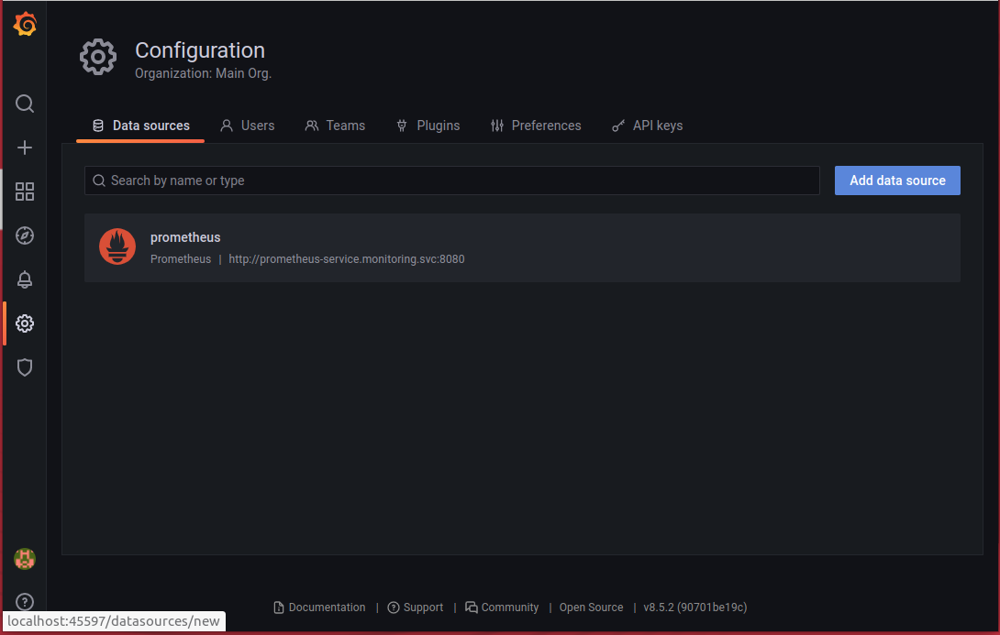
Selecione "Loki".
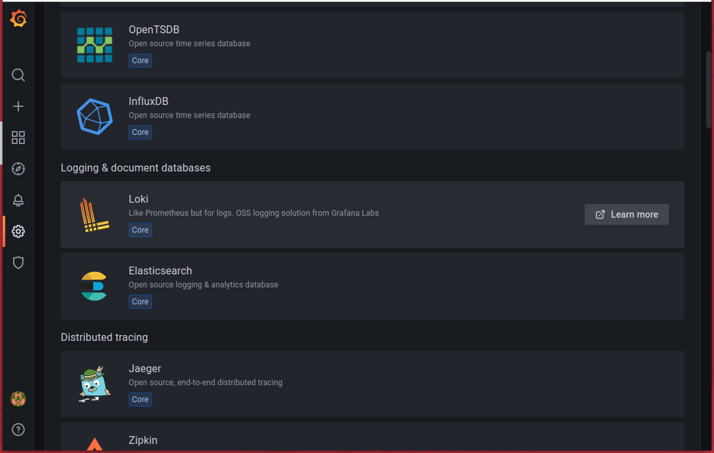
Configure o Loki alterando sua URL para http://loki.monitoring:3100.
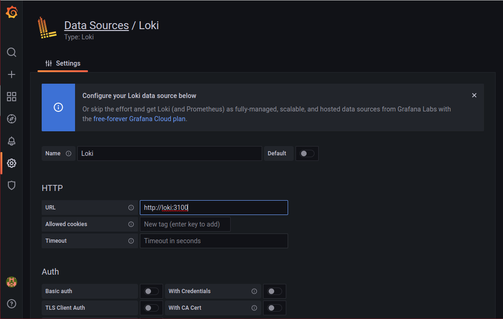
Clique em "Save & test" no final da página.
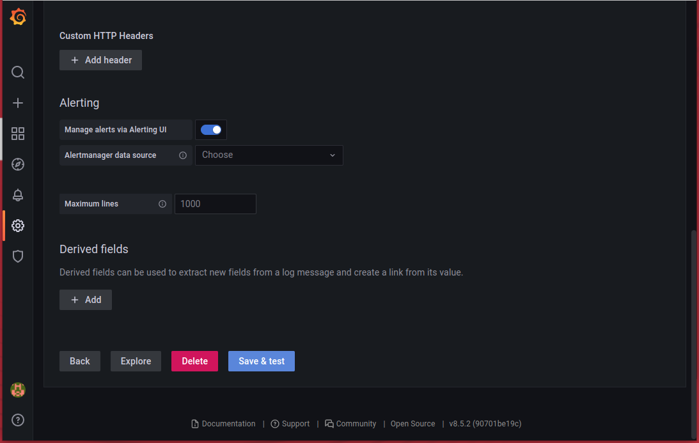
No menu lateral esquerdo, vá no ícone de "mais"/"adição" (+) e selecione "Import".
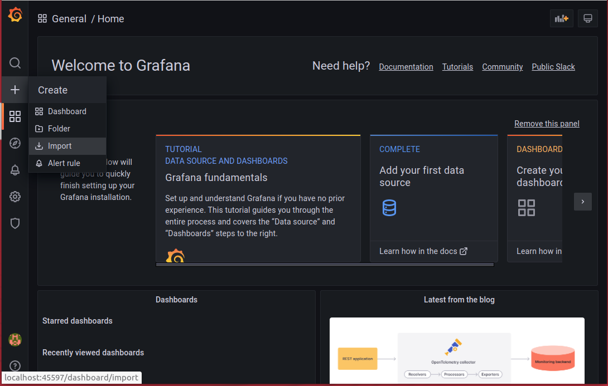
Digite "12740" em "Import via grafana.com" e clique em "Load" para importar o dashboard do Kubernetes.
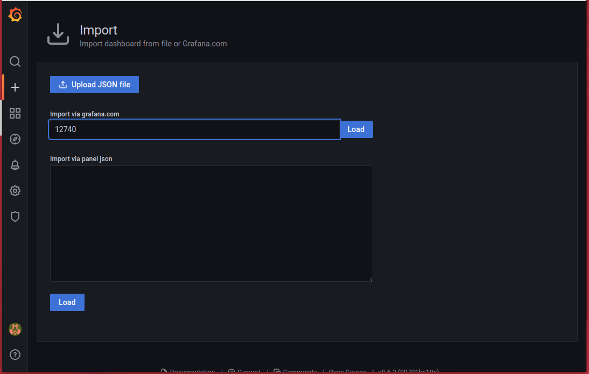
Selecione o seu data source do Prometheus e clique em "Import" no final da página.
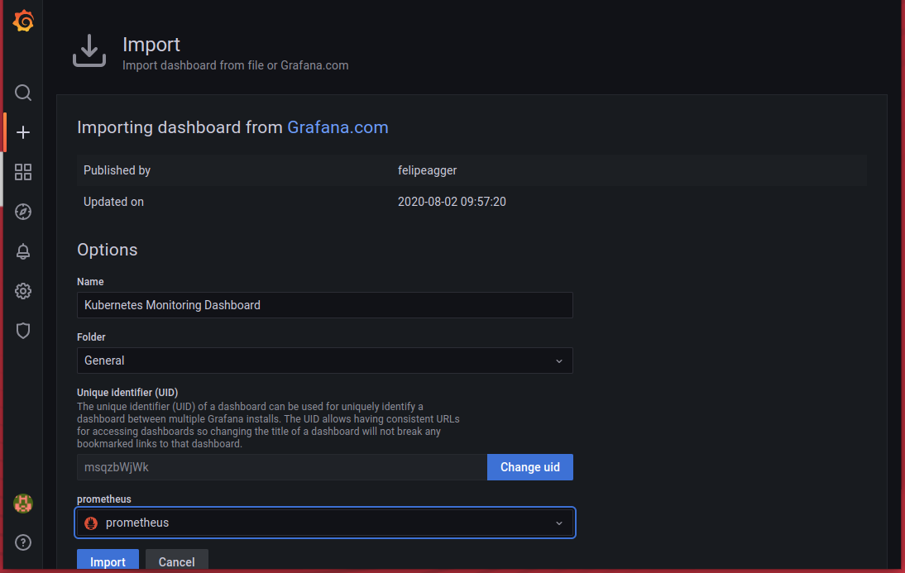